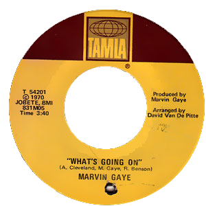

1971
What’s Going On
Muchos se preguntarán...
¡Quien rayos es Marvin Gaye!
What’s Going On
“La voz negra de la seducción”
What’s Going On
“leyenda del soul”
Estrella de la música
Acordaros de él escuchando su música

Marvin Pentz Gay jr.
Príncipe del Soul

El día que Marvin Gaye mató a Marvin Gaye
La historia de la música está sembrada de tragedias, pero pocas superan a la que vamos a recordar hoy. Porque tal día como hoy moría Marvin Gaye, el cantante de canciones como 'Let's Get it On' o 'I Heard it through the Grapevine'
Aunque puede haber algunas personas como tu que nos estas leyendo que sabe perfectamente quien es, lamentablemente en esta generación, muy pocos saben quien fue ese señor, es por eso que hoy les vengo a contar un poco sobre él y sobre uno de los mejores discos de la música, como lo es: ‘What’s Going On’. Marvin Gaye fue un cantante y productor de Soul en las décadas del 60, 70 y principios de los 80’s. Gaye fue una pieza fundamental en el crecimiento y fama de la disquera Motown o mejor conocida como «Tamla-Motown», esta disquera es reconocida por su aporte y apoyo a la «música negra».
Debido a la segregación racial que vivía Estados Unidos en los 50s, 60’s, 70’s y parte de los 80’s, los dueños de Motown se dedicaron a promover todo el talento musical de los músicos de color, donde nacen artistas y bandas como The Miracles, The Temptations, The Supremes, Diana Ross, The Jackson Five, Michael Jackson, Stevie Wonder, Kim Weston, Tammi Terrell, Lionel Richie, Boyz II Men, Queen Latifah, Phill Collins, entre otros. El sello Motown haría por la música negra, lo que Fania Records haría en las mismas décadas por los músicos latinos, logrando grandes producciones y consideradas de las mejores que se pudieron grabar en la música mundial hasta hoy en día. Este gran cantautor y productor tuvo 2 grandes épocas doradas musicalmente, en los 60’s fue reconocido por grandes éxitos que logró tanto en solitario como a dúo con su gran amiga Tammi Terrell con quien cosecho éxitos como «Ain’t No Mountain High Enough» en 1967, tema compuesto por Ashford & Simpson en 1966 y que ha sido considerado como uno de los mejores temas de R&B en la historia de este genero, así como también uno de los dúos mas recordados de la música pop.
El nacimiento de una leyenda…
En junio de 1970, Gaye comienza la producción y grabación del tema «What’s Going On», un tema compuesto por Renaldo Benson, Al Cleveland y el propio Marvin Gaye. «What’s Going On» es una canción con una temática social y protestante, sus compositores la escribieron luego de ver un episodio brutal por parte de la policía. Debido a las constantes negativas de Berry Gordy de publicar este tipo de canciones aludiendo a su oposición por mezclarla con el sonido «bailable» de las producciones del sello, Gaye amenazó al estudio de no volver a grabar si no publicaban el tema, el sencillo salió y se convirtió en un éxito hasta el día de hoy. En la primera década del 2000, fue considerada por la revista The Rolling Stones como la mejor 4ta canción de todos los tiempos. Una producción para la historia. Luego de la salida de este sencillo, Gaye terminó su álbum el cual le serviría para regresar al mundo de la música, el que tituló con el mismo nombre del primer sencillo. «What’s Going On» fue lanzado el 21 de Mayo de 1971, un álbum conceptual y uno de los primeros que se grabarían bajo el sello Motown, en este álbum se pueden conseguir éxitos como «Inner City Blues (Make Me Wanna Holler)», «Mercy Mercy Me (The Ecology)» y «Save The Children», canciones que revolucionaron el mercado para entonces por su sonido y su temática. El álbum «What’s Going On» es una producción adelantada completamente a su época, considerado por la industria, los críticos y los amantes de la música como uno de los mejores discos que se han grabado en toda la historia de la música, con un sonido puro y sublime.
What’s Going On
What’s Happening Brother
Flyin’ High (In the Friendly Sky)
Save the Children
God Is Love
Mercy mercy me (The Ecology)
Right on
Wholy holy
Inner city blues (make me wanna holler)
Es un disco fundamental para los géneros del Soul, R&B, Disco y la música pop, ha servido como influencia para grandes artistas desde la talla de Diana Ross, Stevie Wonder y Michael Jackson, hasta Meghan Trainor, Charlie Puth, Bruno Mars, Jack White y pare de contar. En 1973 se puede escuchar uno de sus temas mas románticos y cargados de sensualidad como lo es el tema que le da el nombre al disco «Let’s Get It On», un éxito que también ha sido versionado por muchos artistas y ha sido banda sonora de muchas películas. Con este álbum de 1971, Marvin Gaye volvería a los escenarios y posteriormente grabaría grandes producciones como «Let’s Get It On» (1973), «I Wan’t You» (1976), «Here, My Dear» (1978) y «Midnight Love» (1982). Su ultimo gran éxito sería el tema «Sexual Healing» una de sus canciones mas conocidas, canción que seria grabada y publicada en su ultimo disco. Debido a sus problemas personales, la depresión de la que nunca se recuperó luego de la muerte de Terrell, su adicción a la cocaína y los constantes problemas con su padre, este resulta muerto en la víspera de su cumpleaños por dos disparos ocasionados por su propio padre, alegando defensa propia ya que Marvin casi lo mata a golpes en una de sus discusiones. Un final trágico para uno de los cantantes y productores más exquisitos que ha tenido la música, hoy en día es sumamente recordado por la industria y los artistas que desean traer ese sonido «Motown» como influencia a las nuevas tendencias de la música. Sus canciones y obras son piezas fundamentales para el estudio de los nuevos artistas y de los no tan nuevos. En este momento de la internacionalización online, sus aportes a la música han sido considerado de los mas importantes para el crecimiento de la música popular y los sonidos innovadores que luego serían explotados y viralizados en los 80’s y 90’s hasta hoy día con todos los avances tecnológicos. «What’s Going On» es un álbum completamente adelantado a su época y yo te invito a que lo escuches de principio a fin y te deleites con «el álbum más grande del siglo XX», así como lo catalogó el diario «The Guardian» en 1999, por encima de bandas y artistas como The Beatles, The Rolling Stones, Michael Jackson, Stevie Wonder, Prince, entre otro.